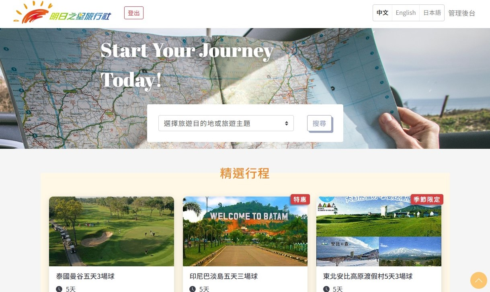

Projects

工作專案 - 旅行社網站
- 實現多國語系、旅費計算等功能。
- 具備在後臺設定 Metadata 和行程等內容管理功能。
工作專案 - 協會網站
- 構建會員註冊及群組系統。
- 不同身份會員擁有對應的編輯功能。
工作專案 - 購物網站
- 與後端合作，串接金流、發票 API 及第三方商品 API。
- 購物車、結帳功能。
- 推薦人制度。
番茄鐘
以 Vue CLI 開發的番茄鐘 PWA。
功能：
功能：
- 新增、編輯及刪除待辦事項，設定待辦事項成已完成狀態。
- 啟動、略過或暫停倒數計時。
- 選擇提醒鈴聲。

營養諮詢網站
沒有使用 UI 框架的前提下，完成的 RWD 網頁切版。
(breakpoint:768、1200px)
(breakpoint:768、1200px)
- 具 loading 載入效果。
- 動畫使用 Animate.css、Animista 等，輪播圖使用 Swiper 完成。
Animate.css Animista wow.js Swiper Font Awesome
Photoshop 、 Illustrator
使用 PS 製作的 banner、年曆、旅遊海報、 Line 貼圖插畫。
以 Illustrator 完成 Behance 上的30 ANIMAL LOGOS CHALLENGE。
以 Illustrator 完成 Behance 上的30 ANIMAL LOGOS CHALLENGE。
Photoshop Illustrator
Figma
以Figma設計的花店電商網站 mock up，包含首頁、關於我、產品頁。
Figma